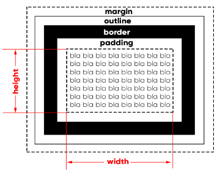
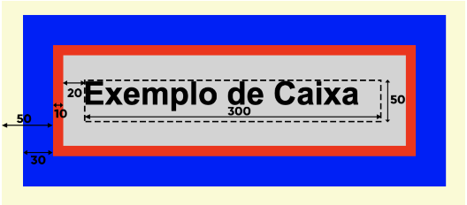
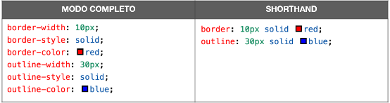

Modelo de Caixas
Entender o modelo de caixas é o primeiro passo para construir interfaces web. Chegou a hora de desenhar nossa primeira página.
O que é uma caixa?
Baseada no conceito "box model", a maioria dos elementos HTML que temos em nosso site são como caixas. São containers que armazenam conteúdos ou até mesmo outras caixas.
Anatomia de uma caixa
Abaixo você pode ver como uma caixa é apresentada nos navegadores:

Tudo começa com o conteúdo (content), que é representado pelo "bla bla bla". Por padrão, as caixas são compostas
apenas pelo conteúdo, sem possuir padding, border, outline ou margin. A únixa exceção é o
elemento <body> que vem com uma margin de 8px.
O tamanho da caixa (box size) é definido por duas propriedades: largura (width) e
altura (height). O box size nãi inclui medidas de padding, border, outline e
margin.
Após definir o conteúdo e o tamanho da caixa nós vamos definir a borda que fica ao seu redor. Ela pode ter uma espessura, uma cor e um formato.
Entre a borda (a parte de dentro dela) e o conteúdo, nós temos o preenchimento (
Entre a margem e a borda podemos determinar o contorno (
Vamos criar um exemplo para exemplificar todos os componentes para configurar as propriedades do modelo de caixa:
<style>
h1 {
width: 300px;
height: 50px;
background-color: lightgray;
border-width: 10px;
border-style: solid;
border-color: red;
padding: 20px;
outline-width: 30px;
outline-style: solid;
outline-color: blue;
margin: 50px;
}
</style>
Veja o que ocorreu com o título abaixo:
Exemplo de Caixa
Todas essas configurações estão sendo feitas no elemento <h1>. As linhas 3 e 4 configuram o size da caixa, com largura e altura, tendo o tamanho
de 300x50px.
Já as linhas 5, 6 e 7 configuram uma borda solida, vermelha e com 10px de espessura.
A linha 8 cria um espaço interno de preenchimento (da borda para dentro) de 20px no elemento e a linha 12 cria um espaço externo (da bor da para fora) de 50px.
As linhas de 9, 10 e 11 usam parte da margem para criar um contorno azul, sólido e com 20px de espessura.
OBS: para calcular o Tamanho Total de um elemento na tela, some os tamanhos do conteúdo + preenchimento + borda + margem. O contorno deve ser desconsiderado, pois usa parte da medida da margem.
A imagem a seguir pode ajudar a entender onde cada um desses comandos está inserido:

As meididas de height e width (300x50) são a parte pontilhada do conteúdo.
A border de 10px é a parte vermelha e o outline de 30px é a parte azul. O padding de 20px para dentro da borda vermelha de 10px box size
e a margin são os 50px para fora da borda vermelha. parte da margin está sendo ocupada pela cor azul do do outline.
A medida total que a caixa vai ocupar é de 50 + 10 + 20 + 300 + 20 + 10 + 50 = 460px de largura e 50 + 10 + 20 + 50 + 20 + 10 +50 = 210px de altura.
OBS: Na CSS3 existe a nova propriedade box-sizing onde pode se definir as dimensões de height e width como sendo medidas da borda (border-box)
ao invés de pelo conteúdo (content-box).
Dá pra simplificar?
As configurações de borda e contorno possuem shorthands para simplificar o código. A ordem para as duas configurações é sempre a mesma para as duas shorthands: largura (-width), estilo (-style)
e cor (-color).
